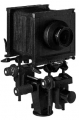

器材库 > 大幅面相机 > f1

规格总览
产品类型
Field Camera
规格
4×5英寸
发布日期
未知
移轴-前组
上升
70mm
下降
30mm
俯仰（前/后）
40°/40°
摇摆（左/右）
50°/50°
平移
左50mm, 右30mm
移轴-后组
上升
70mm
下降
30mm
俯仰（前/后）
40°/40°
摇摆（左/右）
50°/50°
平移
左40mm, 右20mm
其他规格
皮腔伸缩范围
40mm - 450mm
微调对焦距离
40mm
组件
相机底座，基础单轧（30cm），单轧尾套两枚，多用途前框架，4×5英寸后框架，4×5英寸标准皮腔，4×5英寸对焦后背，镜头板框架
重量
3600g
胡言乱语2010-09-18 13:554.17 分
操作性 4.00功能性 3.50美观性 4.50趣味性 4.00耐用性 4.00性价比 5.00
产品图 / 样片
Sinar f1
评测 / 相关文章
该产品暂无存档的评测文章